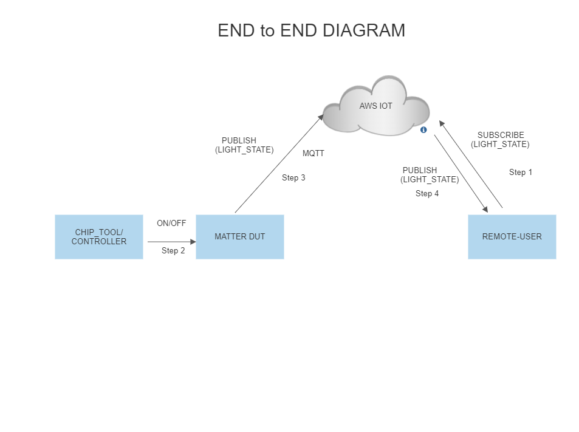
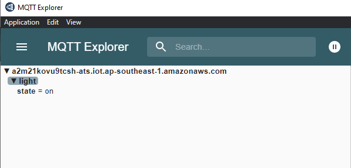

Matter Wi-Fi Direct Internet Connectivity
Direct Internet Connectivity (DIC) is a silabs only feature to connect matter devices to proprietary cloud solutions(AWS,GCP,APPLE …) directly. As such, a Matter Wi-Fi device must support connecting locally on the Matter Fabric, via IPv6, and connecting to the Internet via IPv4.
Matter devices can be controlled by chip-tool or controller and the respective status of the attribute modified will be published to the cloud.
Remote user can install the cloud specific application to get the notifiction on the attribute status.
Feature Design

End-to-End Set-up bring up
Message Queuing Telemetry Transport (MQTT)
MQTT is an OASIS standard messaging protocol for the Internet of Things (IoT). It is designed as an extremely lightweight publish/subscribe messaging transport that is ideal for connecting remote devices with a small code footprint and minimal network bandwidth. Refer https://mqtt.org/ for more details
Configuration of MQTT server
To set up and configure AWS or Mosquitto for DIC support please see the following documentation:
Remote User Setup (MQTT Explorer)
A remote user is used to check the state of device. In this context MQTT explorer is used as a remote user.
DUT Setup
Software and Hardware prerequisites for working with Silicon Labs Matter.
Use the build command for DIC instead of Normal build command which one present in SW_SETUP.md Don’t use normal build comands
End-to-End Test of DIC Light Application
User Setup (MQTT Explorer)
For executing with efr32, refer to the following: Running the Matter Demo on EFR32 hosts
For executing with SiWx917 SoC, refer to the following: Running the Matter Demo on SiWx917 SoC
In MQTT explorer under light/state topic, state of the light will be updated. Below is the screenshot for reference
